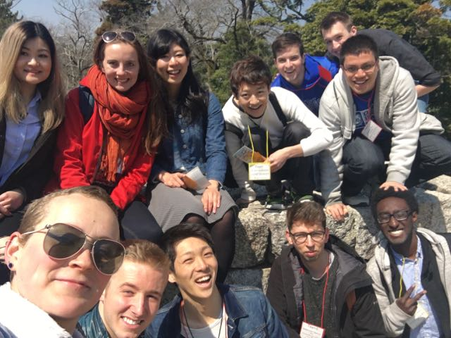
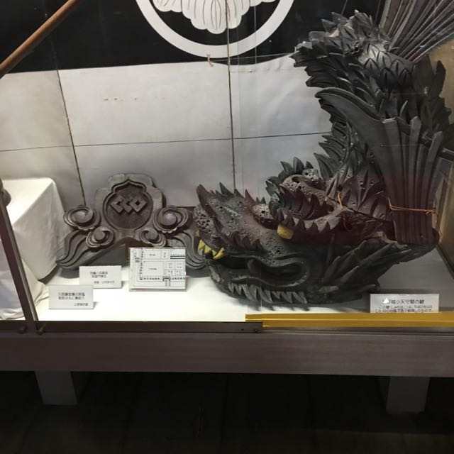
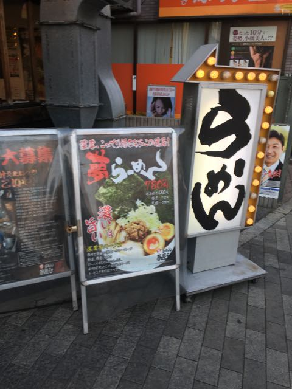
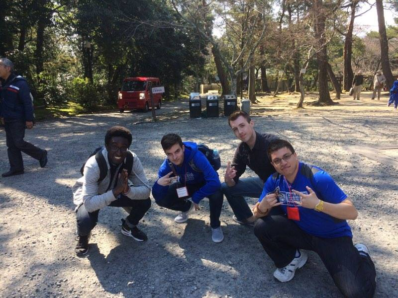

Week 1
So I have always wanted to come to Japan, but boy I did not know what I was getting myself into. You know when people say when you arrive to a new country you will be super excited? That was definitely not me. Culture shock hit me big time when I got on my flight from Taipei to Osaka. And here I was ready to jump right in two weeks ago haha. Japan is INCREDIBLY different than America. It’s hard to explain, but one can fully grasp it by traveling to Japan. I really wanted to go home to the states for a solid week. I had the exact opposite experience then a lot of people (most study abroad students start in the honeymoon phase).
Some Roadblocks
It also doesn’t help that I am not fluent in Japanese. Since I live with a host family (a Japanese family), the communication was shaky at first. I didn’t want to be rude, but at the same time I couldn’t communicate everything I needed to be done!
There was a funny moment when I tried to explain to Otousan (my host dad) the population of Drake University, and Des Moines. Instead of being explicit, I thoroughly confused my Otousan and said that the population of Drake was the same as Des Moines…. It was pretty embarrassing. I also embarrassed myself when I was talking to some of my Japanese friends that I made about my math major. I tried to explain what a math major really is (which is already kind of difficult in English since no one knows what high level mathematics is….) and I completely failed. I laughed it off but it was pretty frustrating lol.
I have made myself look like a fool several times already. Japanese is a pretty difficult language!
I was also really frustrated about the amount of stares that I have been getting. On the train, people deliberately move to more crowded sections so they don’t have to sit by me. Sometimes when I am walking, If I am sharing a sidewalk with a person, they will cross the street to a different sidewalk, and then they will return to the original sidewalk once I have passed them. Shoot, some small kids would say, in Japanese of course, who is that weird looking man.
I think the factor of race really made me want to go home. There are like no black people in Japan (surprise!), and this is probably the first time any of these people have seen a black person before. However, now I feel more comfortable because I think they react out of ignorance. People are incredibly friendly once they realize I can speak Japanese, or if I smile at them (I just wear a smile wherever I go now haha). This has even encouraged people to say hello to me! Alas, this hasn't fully diminished the problem.
I honestly don’t think Japan is a racist society at all. Not even close. I would actually say it is the opposite. A lot of Japanese people are very nice: they are just very shy in general. Once you smile at someone they usually respond back. When I talked to Japanese students they were very interested in where I am from, etc. etc. However, I don’t think the train situation will change (it is happening to a lot of the foreign exchange students), but that’s fine.
Preliminary Thoughts on Race
Being in Japan has given me a new perspective on racial and ethnic issues. I am living in a country in which the population is overwhelmingly Japanese (about 97%). You would think there would be overt racism but there isn’t. Now if we look at America, our history is riddled with racism (even till this day). As Americans, we can no longer claim that we are ignorant about racial and ethnic issues because we are a multicultural nation. It’s high time that we pitch this crap in the garbage where it belongs.
The countries that are incredibly homogenous should be the ones perpetuating the stereotypes (countries like Sweden, Japan, Finland, Norway, etc.). And yet they’re not. Rather, although they may be shy at first, they accept the person and try to learn about the person’s background (this is based on talking to my friends who are from Norway, Sweden, and other European countries). Why can’t Americans do this??? Sorry, I needed to include this because I have been thinking about this ever since I got to Japan. Whew, let’s get back to the week recap!
Closing Thoughts
I am surprised how much I have learned in a week and now communication isn’t as big of a problem anymore. Hopefully this trend continues. I have also made several new friends from all over the world, had political and philosophical discussions that were immensely fascinating, and I have experienced a number of really cool things in Japan. On Sunday, my Otousan and Okaasan took me to a Buddhist spring festival that was incredibly interesting. I also went to a karaoke place, authentic ramen shop, a shrine, a ninja village (yup they exist), and other random shops. It sure has been a whirlwind! I am learning a lot about myself, how other people conduct themselves, and gaining a greater appreciation for differences in culture.
I also have the best 3 guys to accompany me. My friends Colin, Grant, and Lhito have become some of my greatest friends and I am blessed to have such cool dudes on this trip. It’s been almost two weeks (including traveling) and I feel that we all have gotten pretty close. Cheers to more adventures!
 Lhito Messing With My Fro  A Cool looking dragon in the Iga-Ueno Castle Museum  Outside a ramen shop Spring Buddhist Festival in Takarazuka.  Squad Pic. No explanation needed.Anime Quote of the Week
“If you want to grant your own wish, then you should clear your own path to it.” – Okabe Rintarou
The mad scientist (well quack scientist to be exact) from Steins Gate has explained a great means of reality. If we want something, whether big or small, in this world then we have to carve our own path for it. We can't blame other people for our own mistakes. Rather, we should accept any failure as it will lead to success along the way. We are the authors of our own stories. Are you really going to let someone else write in your autobiography?
Until next time friends. じゃあ、また - Joel Kwaku Owusu Afriyie